Hi! I'm Ellie

Hi! I'm Ellie
I'm a professionally trained senior UI/UX designer with 6+ years of experience.
I strongly believe in the power of research and user-centered design. The best part of my job is to discover users pain points and create an engaging experience. I love collaborative work environment and excited about upcoming changes to the digital world.
I’m currently working at Quest Software.

Making purchasing online simpler

Discovering features of a software is fun again

Daily tasks shouldn't be painful to track and prioritize

Exciting time to play with a new software
Data is cool when the numbers are dancing

No repetitive work anymore!
May 2018 |
This project has been done entirely by myself. Some of the main activities are:
Quest e-commerce web app has remained unchanged for a couple of years after it's separation from Dell.
Its redesign will not only help maintain consistent branding across sites but also will create opportunities to improve existing UX flaws which in turn will:
Quest is a global IT solutions provider to many companies across the world. Here are some specific audiences that interact with Quest e-commerce website:
In this project, our main focus was IT professionals who purchase our products online.
Our secondary important users were stakeholders to benefit from sale increase and meet their financial goals.
Our audience can use the web app from anywhere, office, coffee shop, co-working spaces, airports, etc. They can use their mobile, tablet, or laptop to discover products and most likely make a purchase while they are in front of their laptops/desktops.
They are aware of what their needs are for the business, the problems they are facing and looking for the right solution to meet their budget. They already had a discussion with their technical team and leadership to figure out all the details and money to spend.
They might feel a bit stressed and anxious about the issues affecting their services and want to find the best possible solution as quickly as possible. They might also be excited about using this new solution they are about to buy.
Here are some of the needs they have (user stories):
The solution is to redesign existing web app and having it responsive too so that customers can have a consistent experience in all touch points.
Here is a breakdown of user tasks:
Before starting to sketch any ideas, I created a new user flow based on my findings so that I could validate my assumptions and identify any steps missed or have issues sooner than later. That way I could save some time during design by making sure my solution would target solving the right problem.
My goal was to go through the whole process with stakeholders using this user flow and eliminate any uncertain assumptions later in the project.

1. Catalog listing page
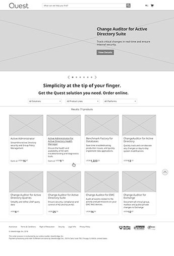2-1. Product detail
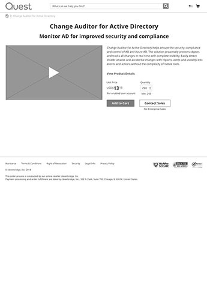2-2. Licensing options
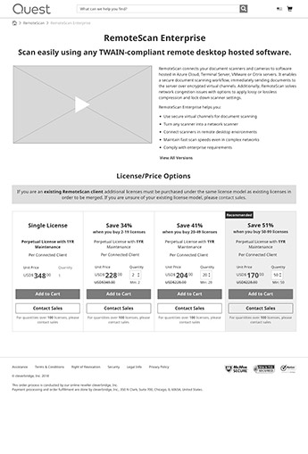2-3. Versions

3. Shopping cart

4. Checkout step 1
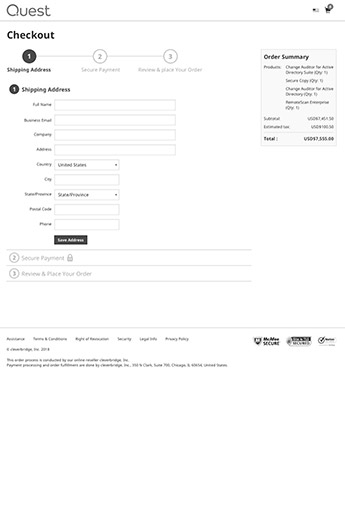5. Checkout step 2

6. Checkout step 3

I created a mini style guide from Quest design library in Sketch so that I can quickly drop elements in to my mocks.
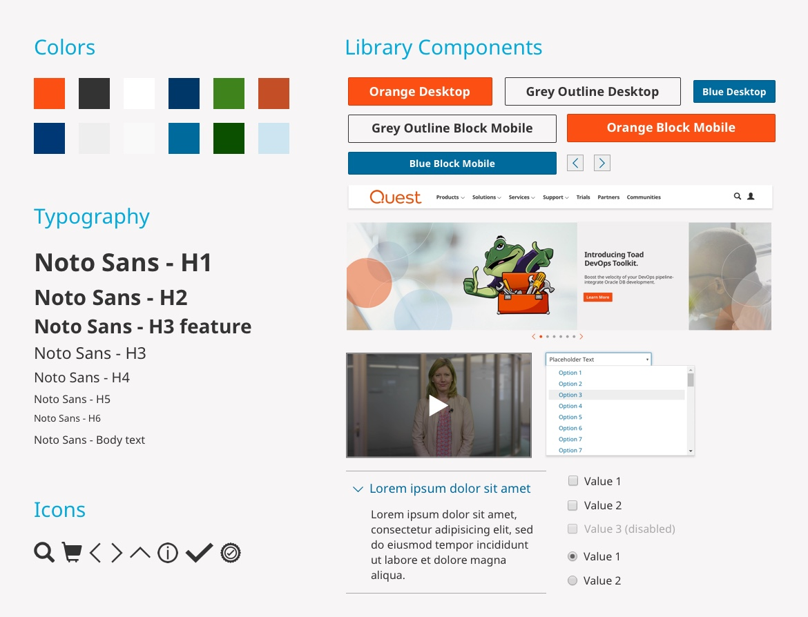1. Catalog listing page

2-1. Product detail

2-2. Licensing options
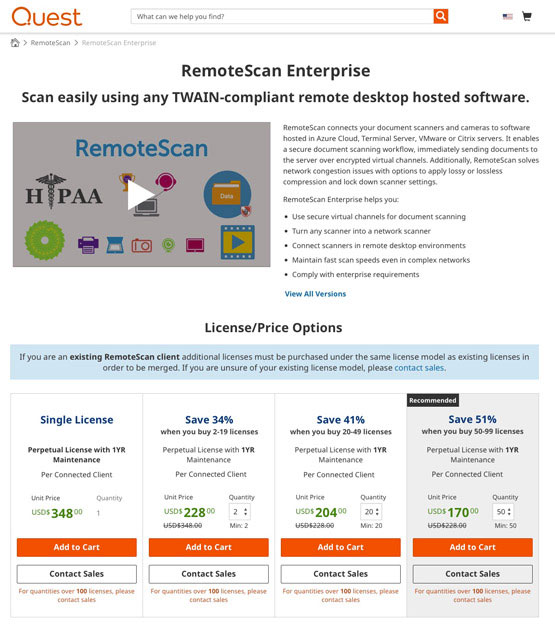2-1. Versions

3. Shopping cart
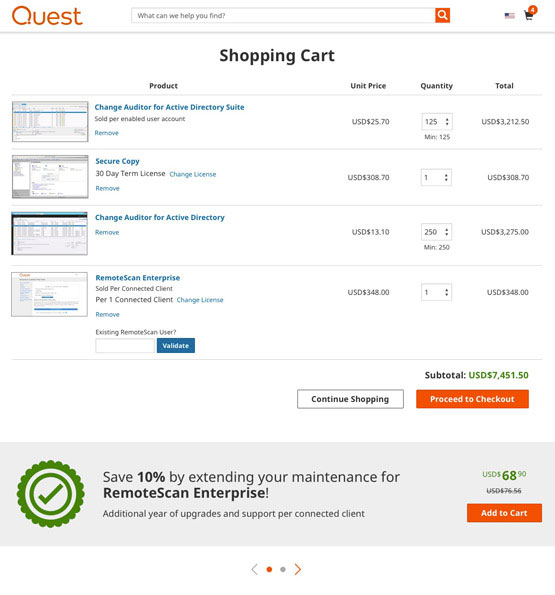4. Checkout step 1
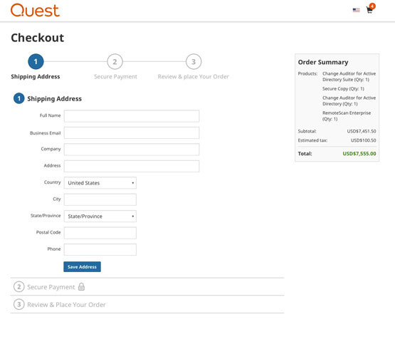5. Checkout step 2

6. Checkout step 3

To measure how successful our website redesign is in improving customer journey, we are going to set up Google Analytics metrics (usability benchmarking/Quantitative research). Here are some assumptions that I expect to happen after launch:
Mar 2018 |
This project was a team effort, however following are some of the key areas I worked on:
It is crucial to know what you are buying before you actually buy it. Nearly all people go through product pages before making a purchase decision. It's therefore important that they provide, clear and detailed information about the features of the product.
The main purpose of redesigning product pages are as follows:
Here are some specific audiences that interact with Quests website before purchasing products through e-commerce site:
In this project, our main focus was IT professionals who decide whether a service is technically a good fit for their needs. We also focused on IT managers as our secondary user group.
Most of our website traffic is from a desktop, which means people mostly discovering products while they are in front of their laptop or desktop. (at work)
They are looking for the most effective solution in the industry to help simplify their processes and day to day tasks.
Here are some of the needs they have:
We decided to do a deep research and find out how can we make the information people are looking for to discover our products more accessible. By improving the information hierarchy and adjusting the content with our user needs, we can meet the goal of easy exploration and discovery for users.
Here is a breakdown of user tasks:
After doing a lot of research about the best order for information architecture, the functionality of different patterns, and content voice we came up with a more engaging template to represent Quest products and help decision-making process easier for visitors.
Competitive analysis for information hierarchy

Competitive analysis for inspiration (statistics)

We had several design critique sessions with teams during this project for feedback and collaboration.
I have coded and created several versions of A/B tests for new patterns to collect data accordingly before we proceed with implementing them into the templates.
View Old TemplateIterations on mocks & team feedback

A/B test result on resources pattern
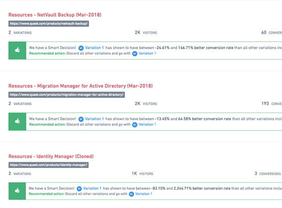Split test result on the new layout
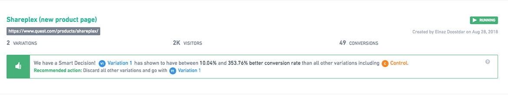This project was a mix of introducing new patterns and improvements to existing components in terms of functionality and branding. Following are the new patterns that I worked on and revised based on research, team feedback, and testing results:
Hero & secondary sticky navigation (Design + Development of background diagonal image)
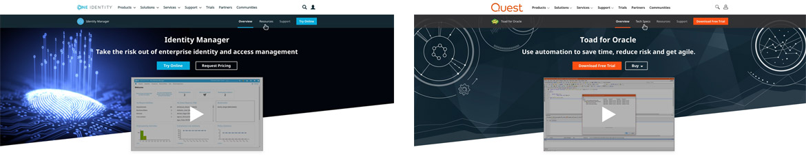Statistics

Display tangible data based on facts worth mentioning about the product
Supported platforms

Customer quotes & reviews from G2 Crowd
I have also coded this pattern and researched optimized image sizes for all devices in addition to character limits along with creating a Sketch template for exporting assets for this pattern and training of team members.


Product tour
Resources (Design + Prototype)
This pattern has been revised 3 times through A/B testing
Get started & client logos
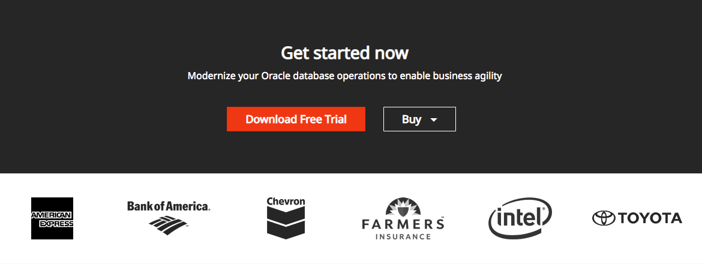Social Share
Share the page through different social media channels to increase social traffic & presence
Sep 2017 |
This was an enhancement project to Quests existing home-grown CMS hosting the entire website and a ticketing system to manage and plan projects and all the requests associated with each project type to meet deadlines.
This project was a team effort. I worked on the project/request planner feature that was replaced the old style project management tool.
Almost all quest employees need to interact with our internal ticketing system in order to get theier work done.
Interviewing different users in the company revealed that enhancement to the existing system will address the following issues and therefore will improve productivity:
Almost all Quest employees interact with this platform to either request work from other team members or track the pending task list in their bucket.
Following are some of the main groups to name a few:
In this project, our main focus was on project managers, agile team members, and individual task owners.
All users are interacting with this platform every day or night depending on how much work they need to deliver by a certain date. They may feel stressed or tired from the amount of work they have and want to quickly see all the tasks assigned to them. They want to spend less time on this environment and more time on their actual tasks.
This platform is only available on the desktop.
Here are some of the needs they have (user stories):
Talking to users of the platform and listing all the main features that were important to the majority of them, we came up with a new feature to be implemented as an enhancement to improve user experience and efficiency of how we work every day.
Following are some of the tasks that different user groups will perform on this platform:
Since this project was an enhancement to the existing platform, many patterns and elements have been reused to maintain consistency. Project Request Planner is the only new pattern designed to integrate new functionalities. One of the biggest challenges with the addition of this feature was the migration of old-style projects into this new style. To overcome this barrier and gradual migration we defined two types of projects standard (old) and guided (new).
1. Add a new project

The process starts with this screen to add a new project.
2. Project/Request type breakdown
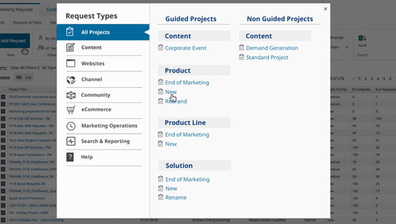My fellow designer colleague worked on this pop up which shows break down of the different request and project categories based on user interviews and card sorting sessions.
3. The first step to create a project
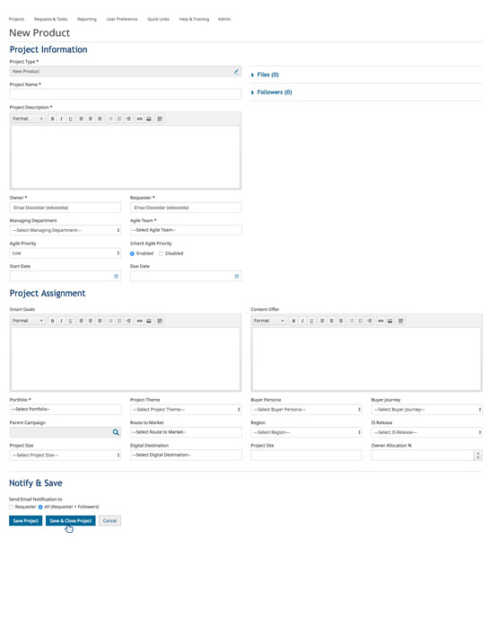4. Guided project entry page

4-1. Project Request Planner details
All required tasks and phases for different type of projects were defined by the business analyst of this project through interviews with users.

4-1. Moving tasks between phases

5. Adding a new request to a task

6. Adding a new or an existing task to a phase
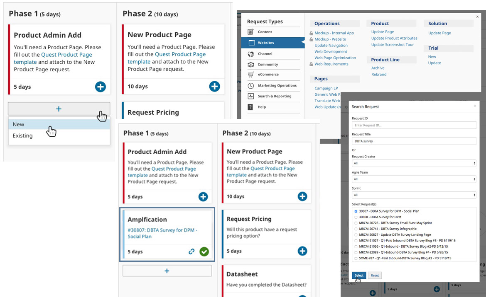7. Timing status for different tasks

8. Request task manager
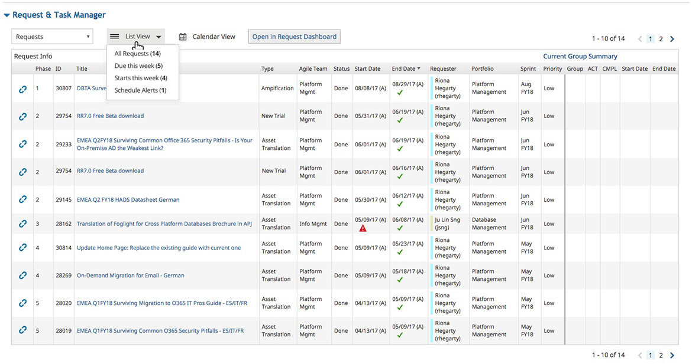Here are some assumptions that we expected to see after launch:
Feb 2018 |
This project has been done entirely by myself. Some of the main activities are:
Trial download landing page carries a high importance in the user journey since it is where the actual conversion takes place and brings the company revenue. Optimizing the form and enhancement to this page will be a win-win both for the user since they reached their goal of finding a solution for the issues they were experiencing and for the company to meet their conversion goals.
At this point that the user is convinced that the product they have discovered may meet their needs, It's our job to make the access to the trial as quickly as possible by:
The primary audience for this project is IT professionals such as developers, database administrators, data analysts who are:
Although some of the Quest products are responsive, they are mostly available on a desktop. Almost all users download and try them on a laptop or desktop computer.
They may feel excited to see what this new solution has to offer and so focused to figure out all the capabilities. They need good reasons to convince their manager to buy this solution and need to capture all the pros and cons through the trial version.
They need to install the trial version on the operating system they are using quickly and easily so that they can play with all the crucial features during the trial period.
The solution is to the redesign existing web page based on research results to convince users to download the free trial and that how this product will help them solve their issues.
Here is a breakdown of user tasks:
I started by reading several articles and research papers to find out the primary rules for designing an efficient form. Followings are some of the best practices I captured:
Based on my findings and working with the business analyst about the requirements of the flow I have come up with the following flow/style for the new form:


1-1. Hero space (initial load - short form)

1-2. Hero space with customer logos
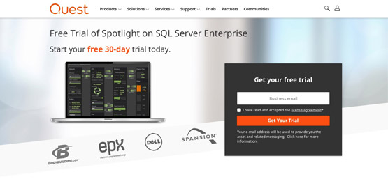Adding customer logos under the hero will create a chance to showcase popular companies using this product.
2. Product benefits

3. Awards and recognition
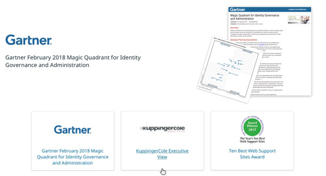Final page


Some of the activities that we are going to track are:
Jul 2018 |
This project was a team effort. I mainly worked at the UI for web and interactions such as:
Facts are always attractive when they are measured through numbers and data.
The main goals of this project are:
The primary audience for this project is IT managers and directors working mainly on IT administration. Following are some of their attributes:
People are going to use this resource when they are in the process of discovering a new solution for some issues they are experiencing. Thus it is important to present them with actual data (facts) and how impactful this solution can be to help solve their issues. They are responsible to keep the systems up and running 24/7 and looking for a tool that can automate some of their tasks and make monitoring the systems easier so that they can stay on top of everything all the time.
We wanted to try and see how motion can make data more valuable and create a better connection with the person consuming it. We came up with this idea to test and see how engaging it will be to present the same data in a static file versus a dynamic web page. Here is the breakdown of how the user can interact with this new page:
1. Hero area
Fade in and bounce effect to show the initiation of the story and immediately indicate the benefits
2. Critical information about IT vulnerabilities
3. Rising complexity configurations
4. The solution to overcoming all the previously stated issues
I'm running a split test between this version and a static web page which includes the infographic in pdf file. Some of the activities that we are going to track are:
Oct 2016 |
This project was a team effort.
Here are the highlights of my role:
When Quest was part of Dell company all employees had a central place to go and get the information about design system from Dell design library.
After becoming an independent company with a new brand, the need to have this information gathered in one place was even more crucial than before (especially for third-party vendors). This was the main reason for doing this project to:
The main audience is basically everyone who needs to touch areas related to Quest such as website, graphics, multimedia, and content. This group includes designers, developers, copywriters, creative team & multimedia folks, project managers, third-party vendors, and product owners.
Users are mainly going to use this environment when working on their tasks. They need to have a single place to make sure complying with Quest branding, voice, and standards to create a distinctive look and feel that is immediately recognizable as Quest.
Most of the users are going to refer to this environment while working on different tasks and projects.
It will be effective for them to quickly access the information they need to apply to their day-to-day tasks and don't have to worry about finding them in a file that might not be the latest version.
That way they can spend less time searching and more time working on tasks that matter. Here are some of the needs they may have:
The solution was to create a central library as a knowledge base for design and branding using Frontify platform, that way:
Uber spreadsheet for UI elements
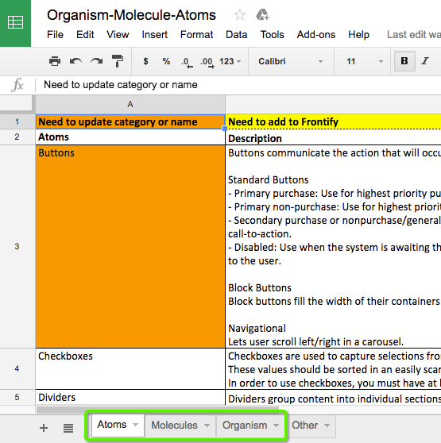Style guide best practices

Studied brand guidelines in the industry to create a standard taxonomy for the brand style guide and UI pattern library
Web style guide

Contributed building Quest web style guide and UI pattern library through tangible terminology
UI design library using Sketch
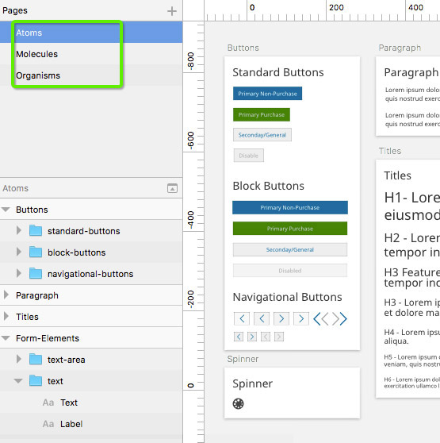Some of the activities that we are going to track are: